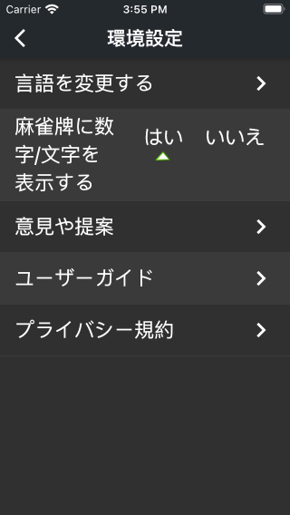

「麻雀寶典」は、世界麻雀組織が2014年に改訂した「国際麻雀競技規則」に基づいて作成したiOS/Android用のアプリです。 主な機能は麻雀の番数計算、麻雀の教学を含む、将来のバージョンでは、より多くの機能が追加されます。
App Storeダウンロードリンク：
App Store
Google Playダウンロードリンク：
Google Play
麻雀寶典」は、簡体字中国語、繁体字中国語、英語、日本語、フランス語の5つの異なる表示言語を提供します。 デフォルトでは、アプリはオペレーティングシステムの言語設定に従って最適な表示言語を自動的に選択します。 別の言語に切り替える場合は、ホームページの左上隅にある「≡」ボタンをクリックし、3番目の項目「言語の変更」を選択して、以下に示すようにポップアップ言語リストから選択できます。
麻雀を入力するには、まずインターフェイス上部の入力位置をクリックします。 このとき、クリックした位置の下に入力プロンプトの三角形が表示され、キーボードが自動的にポップアップします。 以下のように、キーボードから麻雀を入力できます。
暗槓、明槓、碰牌、チー牌の場合は、最初の牌を最初に入力してから、キーボードの上の機能パネルにある対応する機能ボタンをクリックしてください。 たとえば、3索の暗槓を入力する場合は、最初にインターフェイスの上部にある入力位置をクリックし、次にキーボードの「3索」をクリックして、最後にキーボードの上にある「暗槓」ボタンをクリックします。
別の例として、345萬のチー牌を入力するには、まずインターフェイスの上部にある入力位置をクリックし、次にキーボードの「3萬」をクリックして、最後にキーボードの上にある「明顺」ボタンをクリックします。 プログラムにより、4萬と5萬が自動的に入力されます。以下に示すように。

ただし、特殊な状況下では使用できないファンクションキーもあります。たとえば、字牌（東南西北中発白）はチーができないので、現時点では「明顺」、「暗顺」のボタンは表示されていません。
入力が完了したら、「役の点数を計算する」ボタンをクリックすると、アプリが結果を計算して表示します。 入力が間違っている場合、アプリはエラーメッセージを表示します。
「役の点数を計算する」ボタンの下に、「自摸」、「絶張」、「圈風」、「門風」などのその他の情報を設定できます。
ページの左上隅にあるボタンをクリックしてドロワーページを開き、「役の定義」をクリックして役のすべての詳細な定義を表示します。
ドロワーページの「意見や提案」をクリックすると、メールの形で意見や提案をフィードバックできます。できるだけ早くメールに返信しますので、よろしくお願いします！
アプリ開発者：李朴之（Puzhi Li）